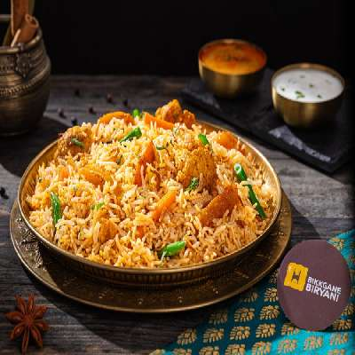
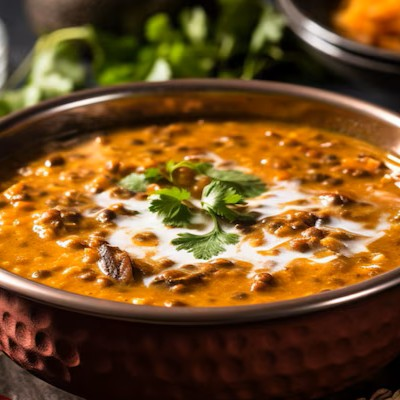
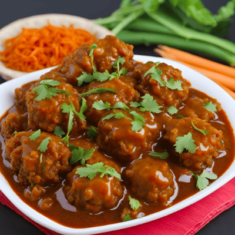
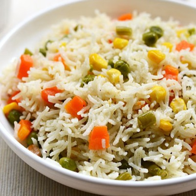
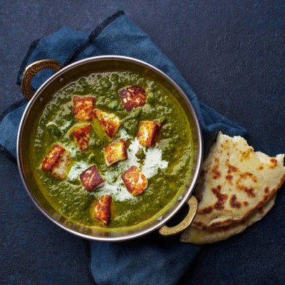
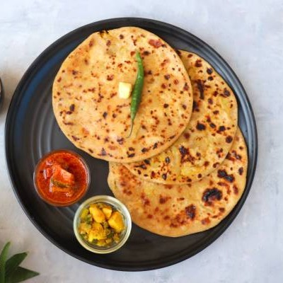
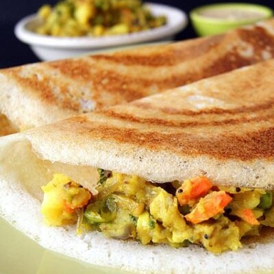
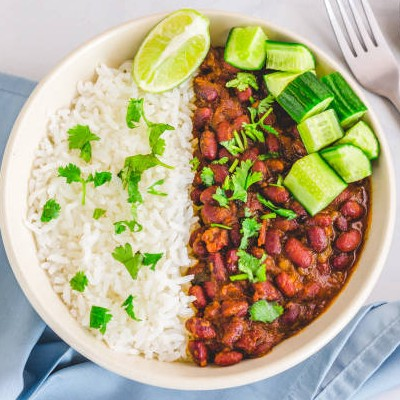

Chole Bhature
Spicy chickpeas served with fluffy fried bread.

Veg Biryani
Aromatic rice dish layered with veggies, herbs, and exotic spices.

Daal Makhani
Slow-cooked black lentils in a buttery, creamy tomato gravy.

Veg Manchurian
Crispy veggie balls tossed in a spicy Indo-Chinese sauce.

Veg Pulao
Fragrant basmati rice cooked with colorful vegetables and mild spices.
Paneer Tikka
Grilled marinated paneer cubes with bold spices and smoky flavor.

Palak Paneer
Creamy spinach gravy with soft paneer cubes and Indian spices.

Aloo Paratha
Stuffed flatbread with spicy mashed potatoes, crisp and golden.

Masala Dosa
Crispy rice crepe filled with spicy potato masala, served with chutney.

Rajma Chawal
Comforting kidney bean curry served over steamed basmati rice.